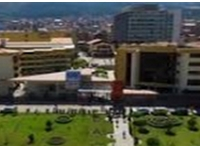
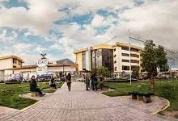
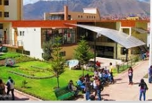
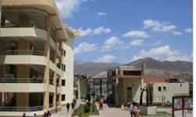
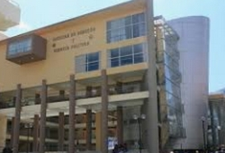

MISION Y VISION
-
MISIÓN UAC"La misión de la Universidad Andina del Cusco, es brindar una educación superior de calidad en la formación integral de profesionales con valores andinos y universales, principios éticos, para contribuir al desarrollo regional, nacional e internacional, a través de la investigación científica y siendo una activa participante de la sociedad mediante la responsabilidad social, el cuidado del medio ambiente, la promoción de la libertad y democracia."VISIÓN UAC"La Universidad Andina del Cusco al año 2025, será la institución líder en educación superior universitaria a nivel nacional e internacional, sustentada en la formación integral de profesionales con educación de calidad, orientada a la ciencia y la tecnología, con valores andinos de sabiduría (Yachay), trabajo (Llank’ay), voluntad (Munay), reciprocidad y solidaridad (Ayni) y valores universales, promoviendo la cultura andina y el desarrollo sostenible de la sociedad."
PRINCIPIOS
- Respeto a los Derechos y Valores Humanos y la autonomía universitaria
- Servicio a la comunidad.
- Respeto a la libertad de pensamiento, a la universalidad de los conocimientos, a los principios constitucionales y a los fines de la Universidad.
- Rechazo a toda forma de violencia, intolerancia, discriminación y dependencia.
- Respeto a la integridad en la gestión, cumpliendo de manera cabal el Estatuto y los Planes de Desarrollo y observando los criterios de equidad, justicia, eficacia, pertinencia, idoneidad, identidad institucional, coherencia, responsabilidad social universitaria, transparencia y racionalidad
VALORES
- Respeto a la dignidad de la persona.
- Solidaridad, honestidad y veracidad.
- Identificada con la cultura ancestral andina, asume y promueve los valores fundamentales de su filosofía:
- -Yachay (sabiduría)
- -Munay (voluntad)
- -Ayni (solidaridad y reciprocidad)
FINES
- Impartir formación universitaria superior de alta calidad.
- Conservar, acrecentar y transmitir la cultura superior de alta calidad.
- Promover la investigación.
- Formar profesionales de excelente nivel académico
- Propiciar el análisis critico de los problemas locales, regionales y nacionales e internacionales y participar en la solución de los mismos.
- Promover el desarrollo de la identidad cultura, el crecimiento humano y la transformación de la sociedad.
HISTORIA
La Universidad Andina del Cusco, fue fundada el 05 de Octubre de 1979, por las siguientes personalidades: Dr. Antonio Callo Cáceres, Dr. Néstor Bustos Silva, Mons. Luís Vallejos Santoni (t) y el Dr. César Cornejo Foronda (t), que inicialmente conformaron la Sociedad Promotora de la Universidad Andina del Cusco, para posteriormente cambiar por Asociación Civil Promotora. El 23 de Mayo de 1984, fue creada por la Ley N° 23837, que dio origen legal a su existencia, teniendo como sede inicialmente el Parque de la Madre, para posteriormente instalarse en su local propio de la Urbanización Larapa Grande del Distrito de San Jerónimo. Desde su inicio ha cumplido con el proceso de organización e implementación, constituyendo una Institución destinada a ofrecer educación superior, realizar investigación y hacer proyección social al servicio de la comunidad, afianzando la primacía de la persona humana que es el fin supremo de la sociedad y del Estado; profundamente comprometida con el cambio social y contribuyendo a la creación de una sociedad justa, libre, solidaria, culta y al servicio del desarrollo local, regional y nacional.La Universidad Andina del Cusco inicia sus actividades académicas el 5 de octubre de 1979, con la inscripción al primer concurso de Admisión que se llevó a cabo el 5 de mayo de 1980, con 1209 postulantes; y el dictado de clases en julio del mismo año con 712 estudiantes en ocho carreras universitarias. En cumplimiento de la Ley 23837 norma su organización y funcionamiento y en concordancia a la Ley Universitaria N°23733 organiza y establece su régimen de estudios a través de las Carreras Universitarias, Facultades, Departamentos Académicos, Centros de Investigación, Proyección Social, Bienestar Universitario, Fomento y Desarrollo Universitario y de Producción de Bienes y Prestación de Servicios.
... [leer más]INFRAESTRUCTURA
